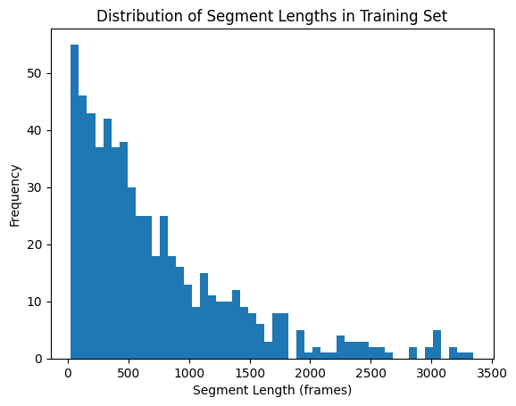
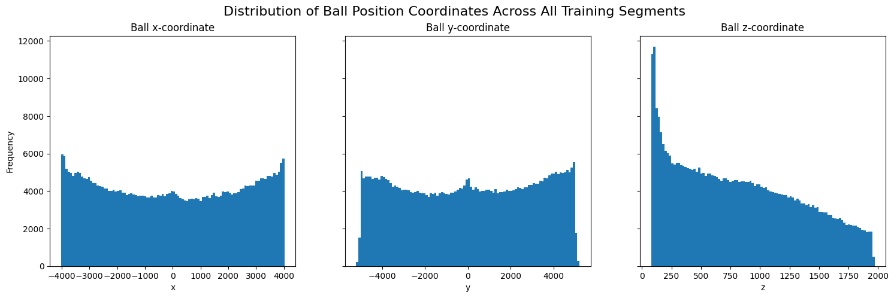
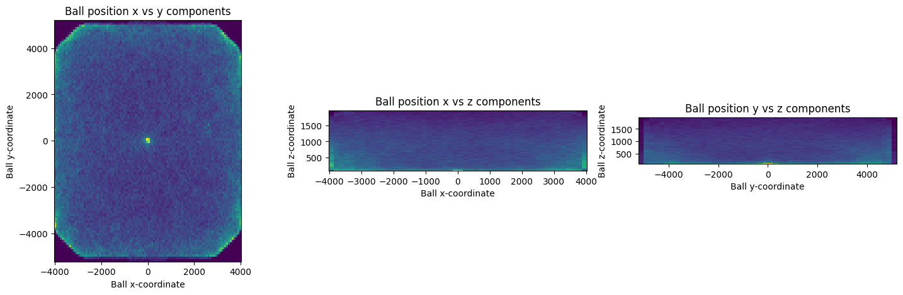
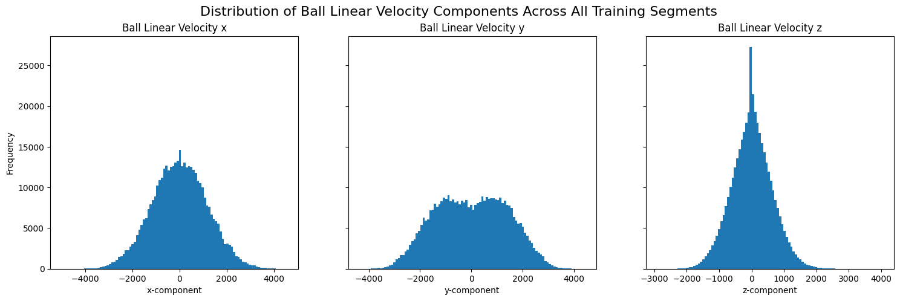
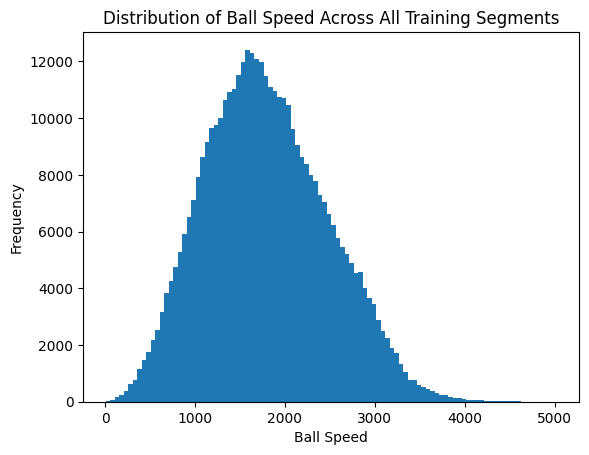
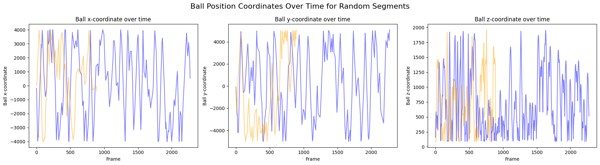

Code
# Imports
from impulse import ReplayDataset
from impulse.preprocessing import SegmentedDataset
from pathlib import Path
import matplotlib.pyplot as plt
import pandas as pd
import numpy as npSegmentDataset object created on the set of 192 replays from RLCS Worlds 2024Found 192 parsed replays in database
Segment length mean: 724.6472491909385
Segment length median: 518.5
Segment length min: 26
Segment length max: 3348Let’s cut out any segments shorter than 3 seconds or longer than 5 minutes. Since the dataset was parsed at 10 FPS, this corresponds to excluding segments shorter than 30 frames or longer than 3000 frames.
We’ll distinguish the original, unfiltered list of training segments from the filtered and further-processed list of segments by calling the former all_train_segments and the latter just train_segments.
Number of training segments before filtering for length: 618
Number of training segments after filtering for length: 6052.1This filter eliminated around 2.10% of the segments we originally had.
Now that we’ve explored our data around the row dimension, let’s look at the columns.
Randomly selected segment frames shape: (540, 161)| frame | current time | frame time | seconds remaining | Ball - position x | Ball - position y | Ball - position z | Ball - linear velocity x | Ball - linear velocity y | Ball - linear velocity z | ... | p7_angular velocity z | p7_quaternion x | p7_quaternion y | p7_quaternion z | p7_quaternion w | p7_boost level | p7_dodge active | p7_jump active | p7_double jump active | p7_player demolished by | |
|---|---|---|---|---|---|---|---|---|---|---|---|---|---|---|---|---|---|---|---|---|---|
| 0 | 298 | 58.385578 | 58.389545 | 273.0 | 43.189999 | -24.400000 | 190.279999 | 1021.840027 | -1049.959961 | 1739.790039 | ... | NaN | NaN | NaN | NaN | NaN | NaN | NaN | NaN | NaN | NaN |
| 1 | 299 | 58.485577 | 58.489544 | 273.0 | 162.179993 | -146.660004 | 388.130005 | 1018.200012 | -1046.180054 | 1657.859985 | ... | NaN | NaN | NaN | NaN | NaN | NaN | NaN | NaN | NaN | NaN |
| 2 | 300 | 58.585575 | 58.589542 | 273.0 | 263.829987 | -251.100006 | 550.130005 | 1015.080017 | -1042.939941 | 1587.849976 | ... | NaN | NaN | NaN | NaN | NaN | NaN | NaN | NaN | NaN | NaN |
| 3 | 301 | 58.685574 | 58.689541 | 272.0 | 365.170013 | -355.220001 | 705.140015 | 1011.960022 | -1039.699951 | 1518.069946 | ... | NaN | NaN | NaN | NaN | NaN | NaN | NaN | NaN | NaN | NaN |
| 4 | 302 | 58.785572 | 58.789539 | 272.0 | 449.380005 | -441.739990 | 828.989990 | 1009.359985 | -1037.000000 | 1460.079956 | ... | NaN | NaN | NaN | NaN | NaN | NaN | NaN | NaN | NaN | NaN |
5 rows × 161 columns
This segment has 161 columns. As can be seen, it contains extra columns for the features for up to 8 players (e.g. p6_position x, p6_position y, etc.) despite being a replay for a 3v3 game. This is because the parser pads the ReplayData.frames dataframe to accomodate up to 8 players in a replay. Since these extra columns contain no information, let’s drop them.
Randomly selected segment frames shape after dropping empty columns: (540, 125)Now we only have 125 features in our dataframe, each one carrying some relevant information. Let’s begin to explore these.
Ball columns: ['Ball - position x', 'Ball - position y', 'Ball - position z', 'Ball - linear velocity x', 'Ball - linear velocity y', 'Ball - linear velocity z', 'Ball - angular velocity x', 'Ball - angular velocity y', 'Ball - angular velocity z', 'Ball - quaternion x', 'Ball - quaternion y', 'Ball - quaternion z', 'Ball - quaternion w']ball_cols_dict = {
'position' : [col for col in ball_cols_list if 'position' in col],
'linear_velocity' : [col for col in ball_cols_list if 'linear velocity' in col],
'angular_velocity' : [col for col in ball_cols_list if 'angular velocity' in col],
'rotation' : [col for col in ball_cols_list if 'quaternion' in col]
}
ball_cols_dict{'position': ['Ball - position x', 'Ball - position y', 'Ball - position z'],
'linear_velocity': ['Ball - linear velocity x',
'Ball - linear velocity y',
'Ball - linear velocity z'],
'angular_velocity': ['Ball - angular velocity x',
'Ball - angular velocity y',
'Ball - angular velocity z'],
'rotation': ['Ball - quaternion x',
'Ball - quaternion y',
'Ball - quaternion z',
'Ball - quaternion w']}Cols in list: 13 Cols in dict: 13Ball position components
ball_pos_all_segments = ball_frames_all_segments[ball_cols_dict['position']]
fig, (ax1, ax2, ax3) = plt.subplots(1, 3, figsize=(18, 5), sharey=True)
ax1.hist(ball_pos_all_segments[ball_cols_dict['position'][0]], bins=100)
ax1.set_xlabel('x')
ax1.set_ylabel('Frequency')
ax1.set_title('Ball x-coordinate')
ax2.hist(ball_pos_all_segments[ball_cols_dict['position'][1]], bins=100)
ax2.set_xlabel('y')
ax2.set_title('Ball y-coordinate')
ax3.hist(ball_pos_all_segments[ball_cols_dict['position'][2]], bins=100)
ax3.set_xlabel('z')
ax3.set_title('Ball z-coordinate')
fig.suptitle('Distribution of Ball Position Coordinates Across All Training Segments', fontsize=16)
plt.show()
fig, (ax1, ax2, ax3) = plt.subplots(1, 3, figsize=(18, 5))
ax1.hist2d(ball_pos_all_segments[ball_cols_dict['position'][0]], ball_pos_all_segments[ball_cols_dict['position'][1]], cmap='viridis', bins=100)
ax1.set_aspect('equal')
ax1.set_xlabel('Ball x-coordinate')
ax1.set_ylabel('Ball y-coordinate')
ax1.set_title('Ball position x vs y components')
ax2.hist2d(ball_pos_all_segments[ball_cols_dict['position'][0]], ball_pos_all_segments[ball_cols_dict['position'][2]], cmap='viridis', bins=50)
ax2.set_aspect('equal')
ax2.set_xlabel('Ball x-coordinate')
ax2.set_ylabel('Ball z-coordinate')
ax2.set_title('Ball position x vs z components')
ax3.hist2d(ball_pos_all_segments[ball_cols_dict['position'][1]], ball_pos_all_segments[ball_cols_dict['position'][2]], cmap='viridis', bins=50)
ax3.set_aspect('equal')
ax3.set_xlabel('Ball y-coordinate')
ax3.set_ylabel('Ball z-coordinate')
ax3.set_title('Ball position y vs z components')
plt.show()
Ball linear velocity visualization
ball_linvel_all_segments = ball_frames_all_segments[ball_cols_dict['linear_velocity']]
fig, (ax1, ax2, ax3) = plt.subplots(1, 3, figsize=(18, 5), sharey=True)
ax1.hist(ball_linvel_all_segments[ball_cols_dict['linear_velocity'][0]], bins=100)
ax1.set_xlabel('x-component')
ax1.set_ylabel('Frequency')
ax1.set_title('Ball Linear Velocity x')
ax2.hist(ball_linvel_all_segments[ball_cols_dict['linear_velocity'][1]], bins=100)
ax2.set_xlabel('y-component')
ax2.set_title('Ball Linear Velocity y')
ax3.hist(ball_linvel_all_segments[ball_cols_dict['linear_velocity'][2]], bins=100)
ax3.set_xlabel('z-component')
ax3.set_title('Ball Linear Velocity z')
fig.suptitle('Distribution of Ball Linear Velocity Components Across All Training Segments', fontsize=16)
plt.show()
Ball speed

Visualizations of each of the features over time for a random segment.
# Ball position
fig, (ax1, ax2, ax3) = plt.subplots(1, 3, figsize=(18, 5))
colors = ['blue', 'orange']
for i, seg in enumerate(random.choices(train_segments, k=2)):
ax1.plot(seg.frames[ball_cols_dict['position'][0]], alpha=0.5, color=colors[i])
ax2.plot(seg.frames[ball_cols_dict['position'][1]], alpha=0.5, color=colors[i])
ax3.plot(seg.frames[ball_cols_dict['position'][2]], alpha=0.5, color=colors[i])
ax1.set_xlabel('Frame')
ax1.set_ylabel('Ball x-coordinate')
ax1.set_title('Ball x-coordinate over time')
ax2.set_xlabel('Frame')
ax2.set_ylabel('Ball y-coordinate')
ax2.set_title('Ball y-coordinate over time')
ax3.set_xlabel('Frame')
ax3.set_ylabel('Ball z-coordinate')
ax3.set_title('Ball z-coordinate over time')
fig.suptitle('Ball Position Coordinates Over Time for Random Segments', fontsize=16)
plt.tight_layout()
plt.show()